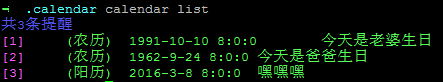

欢迎使用Calendar小程序
Calendar小程序是一个简易日程提醒服务程序，她起源于作者难以记住爸妈以及三姑六婆七大姑八大姨的农历(lunar)生日，于是作者写了这么个简易的日历提醒服务程序。建议在Linux服务器上使用，由于Calendar是go语言编写，理论上借用nssm也可以在windows服务器上使用。提醒通知采用的是短信的方式，因为作者认为最不易被拦截的通知方式就是短信了，最通用的通知也是短信，甚至功能机都可以用；Calendar目前使用的是云片网的短信通知服务，用户需要自行开通云片服务。
安装
go get github.com/duguying/calendar
ln -s $GOPATH/bin/calendar /usr/local/bin/calendar
配置
Calendar的配置文件会存储在当前用户目录下的.calendar目录，该目录是程序第一次运行时自动生成的。
.calendar/config.json文件中存储的是提醒事物数据。
.calendar/api.key中存储的是云片网的api密钥，需要用户自己填写。
.calendar/sms.tpl中存储的是云片网中定义的短信模板，该模板会被程序调用，因此，模板规定如下：
xxxxxxx%sxxxxxxx%sxxxxx其中两个 %s表示两个模板变量，一者为时间，一者为事件。模板中其它文字应当保持与云片网中的模板定义一致，否则会智能匹配失败。
使用
启动服务
calendar serve该命令可以将calendar启动为服务，建议使用
systemd作为服务的启动程序，相关 service文件在仓库根目录中。
客户端
calendar作为客户端也是同一个程序。添加配置
calendar add L R1 D2016.10.10 T10:23 P15911113147 Eevents其中L代表农历(lunar)，R1代表闰月(若为R0则代表非闰月，不填则默认非闰月)，D2016.10.10代表农历2016年十月初十为生日，calendar将会每年农历十月初十提醒，P15911113147代表手机号为15911113147，Eevents代表，提醒的事件名为event。
calendar add S D2016.10.10 T12:23 P15911113147 Eevents其中R代表阳历(solar)，D2016.10.10代表阳历2016年10月初十为生日，calendar将会每年阳历10月10日提醒，P15911113147代表手机号为15911113147，Eevents代表，提醒的事件名为event。
注意，配置是实时动态加载的，可以不必重启服务。但是强烈不建议手动修改
config.json配置文件。列出所有配置
calendar list
其中粉色文字中的数字表示当前配置ID，之后分别是时间和事件。
删除配置
calendar remove 1该命令表示删除ID为1的配置。
作者与捐献
独孤影 (root@duguying.net)

License
MIT License